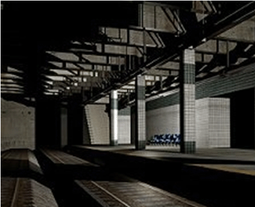
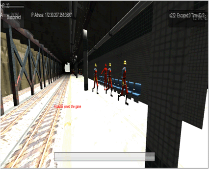
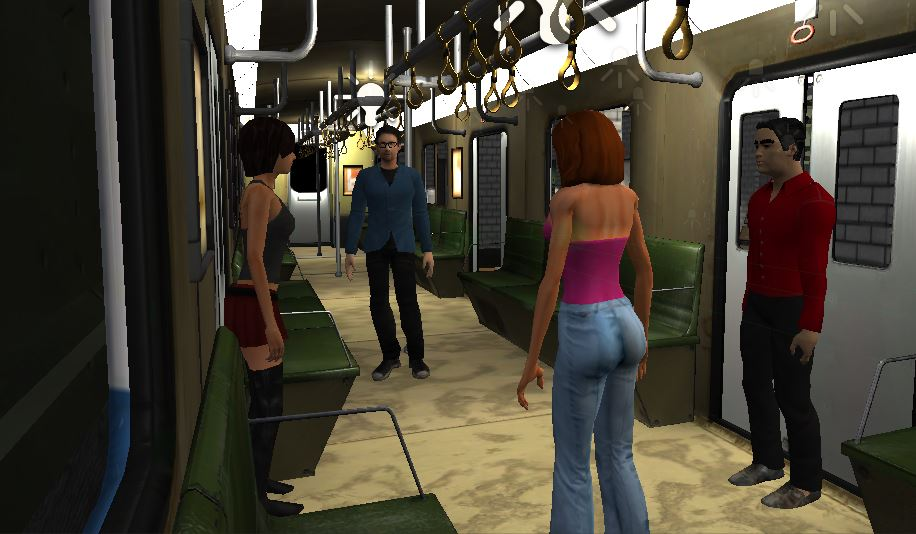
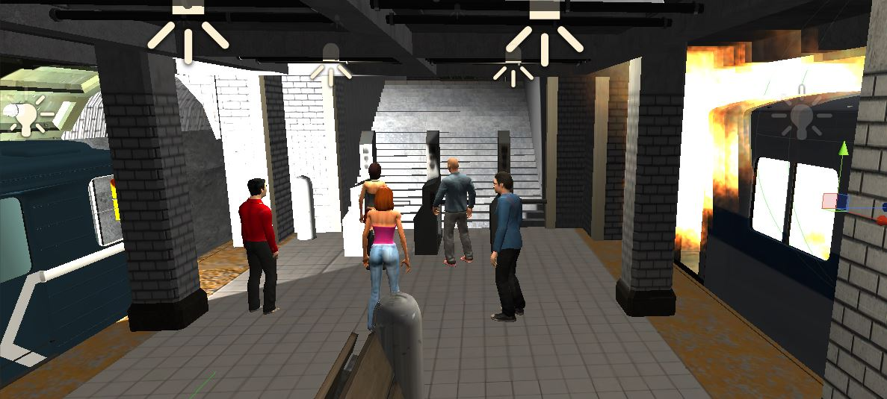
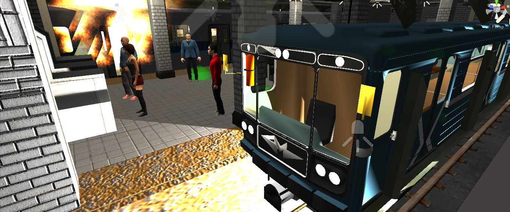
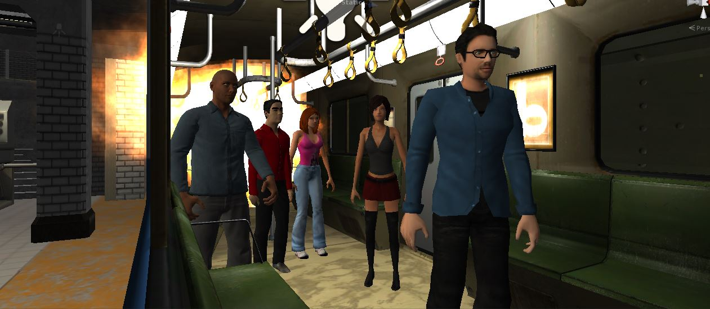
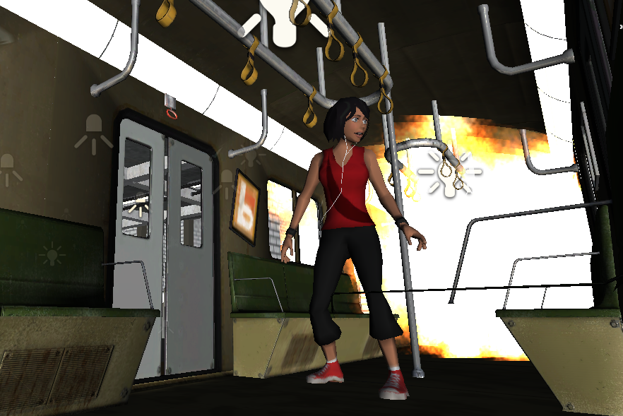

|
Mult-User Virtual Reality Environment (MUVR) for conducting Subway Evacuation drills using Unity 3D and Oculus Rift
Current Students: Phillip Devreaux
Past Students: Pranay Rajeev, Stephon Mackey, Oumar Soumare, Stephen Otunba, Mike Tice, Aaron Boothe, and Titus Thomas
Status: Current
People catch the train to get around the city for many reasons, and with so many people using subway trains, emergencies are bound to occur. A virtual multi-user environment can be used to find flaws in evacuation procedure and show passengers a better way to avoid danger in an emergency. Virtual Reality (VR) training has been used for training and education for many years in military and medical fields. We have used game creation as a metaphor in creating an experimental setup to study evacuation behavior in a Subway Environment. The Oculus Rift is a new virtual reality headset that lets players step inside the game and virtual world. The user can be in virtual world if he has a Oculus Rift device connected to his machine and a game designed for Oculus.
The difference is that a player can feel the game in terms of visualization as he will have a 360 degree projection.
Oculus rift helps in real time scenario’s considering an emergency occurring in pubic places. Creating a live emergency with real people would be dangerous and unethical. However, creating a virtual emergency with real people is safe and efficient.
Hypothesis
- Our hypothesis is that the “sense of presence” provided by the multi-user virtual environment will allow running simulations and conducting evacuation drills without the cost and risk of injury to live actors
- Virtual Evacuation Drills
- More Cost Effective
- Less Setup Time
- Able to Simulate Real Danger
- Improved Response Time
Research objectives
- How do user get into the game and virtual world?
- How can a game be changed to Oculus Rift?
- Difference between regular gaming and gaming with oculus rift?
- How can Multi-user evacition drills help in real time scenario?
Novel Methodology
- Experimental design approach for assessing human behavior (stress, panic, anger, trust, etc.) in emergency evacuation using Multi-user virtual environment.
- Participant observation and data capture
- Social study of online behavior in virtual worlds
- Two kinds of agents: Computer Bots and Human controlled characters. Bots use waypoint algorithim to navigate to a goal.
|
| |
 |
 |
| |
Subway Environment |
Multi- User subway evacuation in progress |
| |
 |
 |
| |
Crowd on the subway |
Inside the train |
| |
 |
 |
| |
Crowd exiting the sybway
|
Fire and Smoke during subway evacuation |
| |
 |
 |
| |
Fire inside the train |
Panic behavior inside the train due to fire and smoke |
| |
Virtual Evacuation Drills
|
| |
Virtual reality experiments with virtual evacuation drills are necessary to study human behavior under emergency situations that cannot be evaluated in the real world. The use of collaborative virtual environments to run virtual evacuation drills for an emergency evacuation eliminates risk of injury to participants and allows for the testing of scenarios that could not be tested in real life due to legal issues and possible health risks to participants. Our contribution lies in our approach to combine computer simulated agents and user controlled autonomous agents in a collaborative virtual environment to perform virtual evacuation drills. Results from this study can be used to measure the effectiveness of current procedures, protocols, and the effectiveness of training for airline and security personals. |
| |
| |
|
|
[Acknowledgement: This study was supported, in part, by Grant NCC1‐03033 and National Science Foundation, Award HRD‐1137541 and Award HRD-1238784]
Publications
- Sharma, S, Jerripothula,S., Mackey, S. and Soumare, O, "Immersive Virtual Reality Environment of a Subway Evacuation on a Cloud for Disaster Preparedness and Response Training", proceedings of IEEE Symposium Series on Computational Intelligence (IEEE SSCI 2014), Orlando, Florida, USA, Dec. 9-12, 2014.
- Sharma, S., Otunba,S.,"Collaborative Virtual Environment to Study Aircraft Evacuation for Training and Education", Proceedings of IEEE, International Workshop on Collaboration in Virtual Environments (CoVE -2012), as part of The 2012 International Conference on Collaboration Technologies and Systems (CTS 2012), Denver, Colorado, USA, may 21-25, 2012.
- Sharma, S., Otunba,S.,and Ogunlana, K. , Tripathy, T., "Intelligent Agents in a Goal Finding Application for Homeland Security", Proceedings of IEEE, SoutheastCon 2012, Orlando, Florida, USA, March 14-17, 2012.
- Sharma, S., Otunba,S.,and Han, J., "Crowd Simulation in Emergency Aircraft Evacuation using Virtual Reality", Proceedings of IEEE, 16 th International Conference on Computer Games: AI, Animation, Mobile, Interactive Multimedia, Educational & Serious Games, (CGAMES), Kentucky, USA, July 27-30, 2011.
- Sharma, S. and Otunba,S., “Virtual Reality as a Theme-Based Game Tool for Homeland Security Applications”, Proceedings of ACM Military Modeling & Simulation Symposium (MMS11), Boston, MA, USA, April 4 - 7, 2011.
- Sharma, S. and Shete, S., “Virtual City: A gaming tool for training and education”, Proceedings of ISCA 26th International Conference on Computers and their Applications, New Orleans, Louisiana, USA, March 23-25, 2011.
Posters and Student Presentations
- Stephon Mackey and Dr. Sharad Sharma, "Virtual Reality Subway Evacuation Drill with Multi-User Environment" , 7th Annual Grant Expo, Office of Research and Sponsored Programs (ORSP), Bowie State University, April 22, 2014.
- Roy B. Brown II and Dr. Sharad Sharma, "Emergency Response Simulation Using Virtual Reality", Oral Presentation, at the Emerging Researchers National (ERN) Conference in Science, Technology, Engineering and Mathematics (STEM), hosted by AAAS, EHR and NSF, Washington DC, February 20-22, 2014.
- Wenhao Chen and Dr. Sharad Sharma, "Kinect and Management Features in the Virtual Reality Classroom", Oral Presentation, at the Emerging Researchers National (ERN) Conference in Science, Technology, Engineering and Mathematics (STEM), hosted by AAAS, EHR and NSF, Washington DC, February 20-22, 2014.
- Titus Thomas and Dr. Sharad Sharma, "3D Simulated Emergency Subway Evacuation", Oral Presentation, at the Emerging Researchers National (ERN) Conference in Science, Technology, Engineering and Mathematics (STEM), hosted by AAAS, EHR and NSF, Washington DC, February 28th - March 2nd, 2013. [Won Second Prize in the oral section under category: Computer Sciences and Information Systems]
- Usha Govindaraju and Dr. Sharad Sharma, "Augmented Reality as a Tool for Learning and Safety", Oral Presentation, at the Emerging Researchers National (ERN) Conference in Science, Technology, Engineering and Mathematics (STEM), hosted by AAAS, EHR and NSF, Washington DC, February 28th - March 2nd, 2013.
- Usha Govindaraju,Sailaja Adusumill and Dr. Sharad Sharma, "M-Evac: An Indoor Augmented Reality Mobile Evacuation System, Grant Expo, Office of Research and Sponsored Programs (ORSP), Bowie State University, April 10, 2013
- Stephen Otunba and Dr. Sharad Sharma, "Virtual City: Teaching Traffic Safety though an Immersive Multiuser Environment, Grant Expo, Office of Research and Sponsored Programs (ORSP), Bowie State University, April 10, 2013
- Stephen Otunba and Dr. Sharad Sharma, "Teaching Traffic Safety Through an Immersive Multiuser Environment", Oral Presentation, at the Emerging Researchers National (ERN) Conference in Science, Technology, Engineering and Mathematics (STEM), hosted by AAAS, EHR and NSF, Washington DC, February 28th - March 2nd, 2013.
- Stephen Otunba and Dr. Sharad Sharma, "Evacuation Simulation in a Multiuser Virtual Reality Environment", Oral Presentation, at he Emerging Researchers National (ERN) Conference in Science, Technology, Engineering and Mathematics (STEM), hosted by AAAS, EHR and NSF, Atlanta, GA, February 23-25 2012.
- Aaron Boothe and Dr. Sharad Sharma, "Emergency Airplane Evacuation Using Game Development Toolkit", Oral Presentation, at he Emerging Researchers National (ERN) Conference in Science, Technology, Engineering and Mathematics (STEM), hosted by AAAS, EHR and NSF, Atlanta, GA, February 23-25 2012.[Won Second Prize in the oral section under category: Computer Sciences and Information Systems and Computer Engineering]
- Aaron Boothe, Mike Tice, Zachary Springer, and Dr. Sharad Sharma, "Multi‐User Environment in VR for Evacuation Scenarios Using Gaming Metaphor", Poster Presentation, at he Emerging Researchers National (ERN) Conference in Science, Technology, Engineering and Mathematics (STEM), hosted by AAAS, EHR and NSF, Atlanta, GA, February 23-25 2012.
 VR LABORATORY (C) 2007-2014, ALL RIGHTS RESERVED
VR LABORATORY (C) 2007-2014, ALL RIGHTS RESERVED |

{kind=link}
{kind=link}
{kind=link}
{kind=link}
{kind=link}
{kind=link}